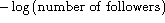

Next: 13.11.5 Tracing
Up: 13.11 HParse
Previous: 13.11.3 Compatibility Mode
HPARSE is invoked via the command line
HParse [options] syntaxFile latFile
HPARSE will then read the set of ENBF rules
in syntaxFile and produce the output lattice in latFile.
The detailed operation of HPARSE is controlled by the following
command line options
- -b
- Output the lattice in binary format. This increases
speed of subsequent loading (default ASCII text lattices).
- -c
- Set V1.5 compatibility mode. Compatibility mode can also
be set by using the configuration variable V1COMPAT
(default compatibility mode disabled).
- -d s
- Output dictionary to file s. This is only
a valid option when operating in compatibility mode.
If not set no dictionary will be produced.
- -l
- Include language model log probabilities in the output
These log probabilities are calculated as
 for each network node.
HPARSE also supports the standard options -A,
-C, -D, -S, -T, and -V as described
in section 4.4.
Next: 13.11.5 Tracing
Up: 13.11 HParse
Previous: 13.11.3 Compatibility Mode
ECRL HTK_V2.1: email support@entropic.com